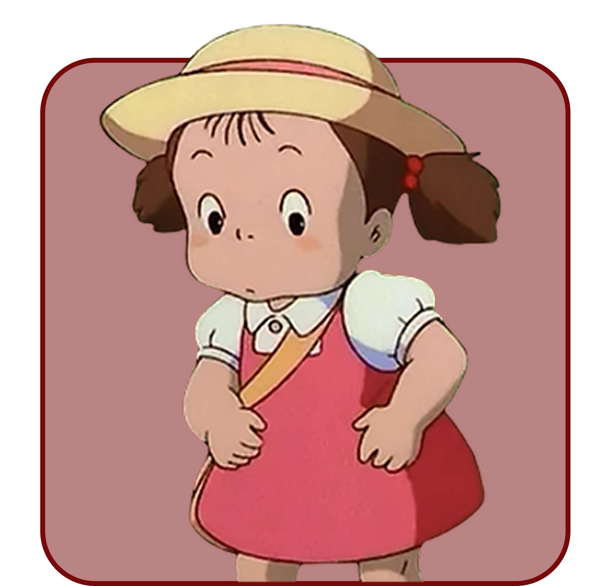

메이
세상을 탐구하는 귀여운 모험가

호기심이 왕성한 귀여운 모험가, 메이!
메이를 닮은 당신에게 세상은 늘 새롭고
매일이 설렘으로 가득한 모험입니다.
평범한 나무 한 그루도, 평소 다니던 길도
당신의 눈에는 특별하고 신기한 세상처럼 보이죠.
그런 당신의 시선은 주변 사람들에게도 신선한 자극을 주고,
함께 있는 것만으로도 웃음을 유발하는
긍정적인 에너지를 뿜어냅니다.
당신은 마치 어린 시절의 순수함과 생기를
그대로 간직한 사람 같아요.
성격 포인트
• 남들이 지나치는 것도 놓치지 않고 관심을 가지는 섬세함이 있어요.
• 감정을 솔직하게 표현하는 편이라 당신 곁에 있는 사람들은 언제나 진심을 느낄 수 있어요.
• 자기주장이 분명해서, 하고 싶은 건 반드시 해내고 마는 추진력이 있어요.
• 상상력이 풍부해 혼자만의 세계를 만들어내고, 그 안에서 즐거움을 찾는 능력이 있어요.
• 혼자 노는 시간도 결코 지루하지 않게 만드는 창의적인 성격입니다.
당신이 가진 메이 같은 매력
• 늘 밝고, 생기 넘치는 에너지로 주변 사람들을 웃게 만드는 능력
• 솔직하고 당당한 태도로 사람들과 진실한 관계를 만들어가는 힘
• 누구보다 열정적으로 하루하루를 살아가는 도전 정신
• 상상과 현실, 감성과 이성을 자유롭게 넘나드는 유연한 사고방식
• 작고 귀여운 모습 속에 숨겨진 똑 부러지는 당당함